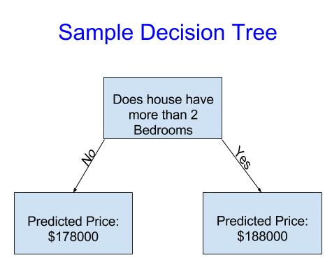

Intro to Machine Learning
How Models Work



Basic Data Exploration
import pandas as pd
# Path of the file to read
iowa_file_path = '../input/home-data-for-ml-course/train.csv'
# Fill in the line below to read the file into a variable home_data
home_data = pd.read_csv(iowa_file_path)
# Call line below with no argument to check that you've loaded the data correctly
step_1.check()# Print summary statistics in next line
home_data.describe()
# What is the average lot size (rounded to nearest integer)?
avg_lot_size = 10517
# As of today, how old is the newest home (current year - the date in which it was built)
newest_home_age = 12
# Checks your answers
step_2.check()Your First Machine Learning Model
The steps to building and using a model are:
- Define: What type of model will it be? A decision tree? Some other type of model? Some other parameters of the model type are specified too.
- Fit: Capture patterns from provided data. This is the heart of modeling.
- Predict: Just what it sounds like
- Evaluate: Determine how accurate the model’s predictions are.
y = home_data.SalePrice
# Check your answer
step_1.check()# Create the list of features below
feature_names = ['LotArea', 'YearBuilt', '1stFlrSF', '2ndFlrSF', 'FullBath', 'BedroomAbvGr', 'TotRmsAbvGrd']
# Select data corresponding to features in feature_names
X = home_data[feature_names]
# Check your answer
step_2.check()# Review data
# print description or statistics from X
print(X.describe())
# print the top few lines
print(X.head())from sklearn.tree import DecisionTreeRegressor
#specify the model.
#For model reproducibility, set a numeric value for random_state when specifying the model
iowa_model = DecisionTreeRegressor(random_state=1)
# Fit the model
iowa_model.fit(X, y)
# Check your answer
step_3.check()predictions = iowa_model.predict(X)
print(predictions)
# Check your answer
step_4.check()Model Validation
There are many metrics for summarizing model quality, but we’ll start with one called Mean Absolute Error (also called MAE). Let’s break down this metric starting with the last word, error.
The prediction error for each house is:
error=actual−predictedfrom sklearn.metrics import mean_absolute_error
predicted_home_prices = melbourne_model.predict(X)
mean_absolute_error(y, predicted_home_prices)Since models’ practical value come from making predictions on new data, we measure performance on data that wasn’t used to build the model. The most straightforward way to do this is to exclude some data from the model-building process, and then use those to test the model’s accuracy on data it hasn’t seen before. This data is called validation data.
from sklearn.model_selection import train_test_split
# split data into training and validation data, for both features and target
# The split is based on a random number generator. Supplying a numeric value to
# the random_state argument guarantees we get the same split every time we
# run this script.
train_X, val_X, train_y, val_y = train_test_split(X, y, random_state = 0)
# Define model
melbourne_model = DecisionTreeRegressor()
# Fit model
melbourne_model.fit(train_X, train_y)
# get predicted prices on validation data
val_predictions = melbourne_model.predict(val_X)
print(mean_absolute_error(val_y, val_predictions))# Import the train_test_split function and uncomment
from sklearn.model_selection import train_test_split
# fill in and uncomment
train_X, val_X, train_y, val_y = train_test_split(X, y, random_state=1)
# Check your answer
step_1.check()# You imported DecisionTreeRegressor in your last exercise
# and that code has been copied to the setup code above. So, no need to
# import it again
from sklearn.tree import DecisionTreeRegressor
# Specify the model
iowa_model = DecisionTreeRegressor(random_state=1)
# Fit iowa_model with the training data.
iowa_model.fit(train_X, train_y)
# Check your answer
step_2.check()# Predict with all validation observations
val_predictions = iowa_model.predict(val_X)
# Check your answer
step_3.check()# print the top few validation predictions
print(val_predictions)
# print the top few actual prices from validation data
print(val_y.head())from sklearn.metrics import mean_absolute_error
val_mae = mean_absolute_error(val_y, val_predictions)
# uncomment following line to see the validation_mae
print(val_mae)
# Check your answer
step_4.check()Underfitting and Overfitting


from sklearn.metrics import mean_absolute_error
from sklearn.tree import DecisionTreeRegressor
def get_mae(max_leaf_nodes, train_X, val_X, train_y, val_y):
model = DecisionTreeRegressor(max_leaf_nodes=max_leaf_nodes, random_state=0)
model.fit(train_X, train_y)
preds_val = model.predict(val_X)
mae = mean_absolute_error(val_y, preds_val)
return(mae)# compare MAE with differing values of max_leaf_nodes
for max_leaf_nodes in [5, 50, 500, 5000]:
my_mae = get_mae(max_leaf_nodes, train_X, val_X, train_y, val_y)
print("Max leaf nodes: %d \t\t Mean Absolute Error: %d" %(max_leaf_nodes, my_mae))
- Overfitting: capturing spurious patterns that won’t recur in the future, leading to less accurate predictions, or
- Underfitting: failing to capture relevant patterns, again leading to less accurate predictions.
We use validation data, which isn’t used in model training, to measure a candidate model’s accuracy. This lets us try many candidate models and keep the best one.
candidate_max_leaf_nodes = [5, 25, 50, 100, 250, 500]
# Write loop to find the ideal tree size from candidate_max_leaf_nodes
mae_list = [get_mae(l, train_X, val_X, train_y, val_y) for l in candidate_max_leaf_nodes]
print(mae_list)
# Store the best value of max_leaf_nodes (it will be either 5, 25, 50, 100, 250 or 500)
best_tree_size = 100
# Check your answer
step_1.check()# Fill in argument to make optimal size and uncomment
final_model = DecisionTreeRegressor(max_leaf_nodes=100, random_state=1)
# fit the final model and uncomment the next two lines
final_model.fit(X, y)
# Check your answer
step_2.check()Random Forests
The random forest uses many trees, and it makes a prediction by averaging the predictions of each component tree. It generally has much better predictive accuracy than a single decision tree and it works well with default parameters. If you keep modeling, you can learn more models with even better performance, but many of those are sensitive to getting the right parameters.
from sklearn.ensemble import RandomForestRegressor
from sklearn.metrics import mean_absolute_error
forest_model = RandomForestRegressor(random_state=1)
forest_model.fit(train_X, train_y)
melb_preds = forest_model.predict(val_X)
print(mean_absolute_error(val_y, melb_preds))from sklearn.ensemble import RandomForestRegressor
# Define the model. Set random_state to 1
rf_model = RandomForestRegressor(random_state=1)
# fit your model
rf_model.fit(train_X, train_y)
# Calculate the mean absolute error of your Random Forest model on the validation data
rf_val_mae = mean_absolute_error(rf_model.predict(val_X), val_y)
print("Validation MAE for Random Forest Model: {}".format(rf_val_mae))
# Check your answer
step_1.check()Machine Learnings Competitions
# path to file you will use for predictions
test_data_path = '../input/test.csv'
# read test data file using pandas
test_data = pd.read_csv(test_data_path)
# create test_X which comes from test_data but includes only the columns you used for prediction.
# The list of columns is stored in a variable called features
test_X = test_data[features]
# make predictions which we will submit.
test_preds = rf_model_on_full_data.predict(test_X)# Run the code to save predictions in the format used for competition scoring
output = pd.DataFrame({'Id': test_data.Id,
'SalePrice': test_preds})
output.to_csv('submission.csv', index=False)